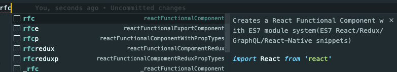

유용한 단축키를 정리합니다.
VSCode 단축키 (Window 단축키) cmd + d (ctrl + d) : 같은 파일내 단어 찾기option + cmd + i (F12) : 크롬 디버그ctrl + space : 파일에서 프로퍼티 자동완성cmd + shift + p : 페이지 셋업 cmd + p : 파일 찾기cmd + j : 터미널 창 열기
Snippets 활용html:5 html 자동완성
1 2 3 4 5 6 7 8 <!DOCTYPE html > <html lang ="en" > <head > <meta charset ="UTF-8" /> <title > Document</title > </head > <body > </body > </html >
:rfc 리액트 템플릿 자동완성

페이지 셋업에서 설정하기
1 2 3 4 5 6 7 8 9 10 11 12 13 14 15 16 17 18 19 // settings.json { // set prettier "editor.formatOnSave": true, "[javascript]": { "editor.formatOnSave": true }, "editor.codeActionsOnSave": { // For ESLint "source.fixAll.eslint": false }, "files.autoSave": "onFocusChange", "editor.fontSize": 13, // set eslint "eslint.alwaysShowStatus": true, "eslint.workingDirectories": [{ "mode": "auto" }], "eslint.validate": ["javascript", "typescript"] }
터미널에서 code . 로 프로젝트를 열기 => Shell Command
프로젝트 매니저에 추가하기 => Project Manager: Save Project